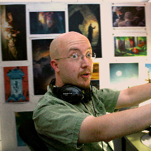

We like roguelikes
Need to email us? contact at roguelike.club
We're all volunteers, and you can join us to help organize next year's celebration! Send us an email, and we can help you find a way to contribute.
2025 Moderator Contact Info
If you need to talk to a mod, either type /mod in the social space with your message, email us at contact@roguelike.club, or email one of our mods directly. See our Code of Conduct page for more details.
If you have a report or concern related to an organizer, please contact a different organizer directly, such as by emailing rourkebywater@gmail.com or moytravis@gmail.com.
Current Organizers

Alexei Pepers
(Druid/Ranger) My Mom got me hooked on Nethack as a child, and delving into the source code led me to speak at Roguelike Celebration 2016 where I was welcomed into this strange and wonderful community. I journeyed down from the frozen wastes of Canada again in 2018 and 2019, and I make games for a living but my most notable contributions to roguelikes so far are the proc gen practitioner spellcasting classes.
Emilia Lazer-Walker
(Bard Artificer) I've also been playing Nethack since I was a kid! I make experimental videogames and weird art installations. I've never made a roguelike, although I do a lot of work with procedural generation! If you'd like, you can check out my portfolio.

Kawa
(Ranger) I've been playing roguelikes since the early 2000s, on a search for free/open source games that would challenge me! I've been on the team for Roguelike Radio on and off since 2012, ran IRDC 2016 in my hometown of New York City, and have spoken at Roguelike Celebration in the past on player culture and history. I'm also the maker of Bot Finds Kitten, a Twitter/Mastodon bot inspired by Robot Finds Kitten!

Travis Moy
(Priest) My gateway to roguelikes was Dwarf Fortress, and that lead to somebody suggesting DCSS, at which I've died a lot and never ascended. I've made a few 7DRL games, one of which ended up pretty good (though, a warning - it runs badly and may crash).
Nathan Savant
(Sorcerer/Bard) I got into roguelikes sideways by playing Nox as a kid and realizing a decade later that it was a roguelike. At that point I dived into the deep end of the roguelike pool and never looked back. Now I find myself burdened with knowledge about procedurally generated characters and story, and end up sharing that curse by giving talks or writing blog posts.

Sam Marcus
(second rate hedge wizard) While Dungeon of Doom and Scarab of Ra were two of the earliest videogames I ever played, I still don't know what a Roguelike is with enough certainty to draw a clear line around the genre. I play (and generally lose) a lot of Roguelikes and someday my own Roguelike project will get past the unnecessary-wheel-reinvention stage and into reality. Sometimes I make things at www.whiletruefork.com.
Rourke
(Bard/Druid) Since I was young I've been fascinated by games with a lot of interlocking systems such as 4X games and trading card games. Then, while in grad school I fell in love with procedural generation, especially simulated histories or social dymanics such as those in Dwarf Fortress, Caves of Qud, or Bad News. Now I get to deal with pcg all the time making games professionally!
Haylee Mills
(Rogue/Monk) - Nuclear Throne changed my life as it introduced me to the difficulty and fun that I loved from mastering and beating Contra as a kid. Used to work as an animator, now work in (and mentor folks) in cybersecurity, work various conferences, and help local artists throw shows for free.
Andrew Janke
(Wizard) - I got introduced to roguelikes by playing Larn in 1988, before I even really understood what a video game was. I do numeric programming and sysadmin stuff by day. I was delighted to find there were other folks in to this weird little space enough to throw a conference about it, and in 2025 I joined the party.
Past Organizers
Noah Swartz (founder), Allison Hughes, Asheesh Laroia, Philip James, Danny Hua, Britta Gustafson, Qristy Overton
Special Thanks
Thanks to the many friends who have helped us make this happen, in big and small ways, including Amanda Glosson, Colin Liotta, Danielle Baskin, Douglas William Thrift, Hillary Benzell, Jay Freeman, Lee Reilly, Andrea Roberts, and many others.
| ! % . . @ . @ . . @ . . . @ @ . \ \ \ \ \ . |